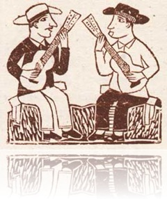

vamo, vamo, vamo…
Claudião
Advogado que mora em Pirituba City - São Paulo - SP
Home page: http://www.dundes.com/wiki/Claudio/HomePage
Posts by Claudião
Um gordo no trânsito
18 years
by Claudião
O relógio despertou às 04:35, hoje. Desliguei-o e dormi até às 06:20, quando não dava mais tempo de fazer nada a não ser tomar banho e vestir a farda.
Não foi preguiça, não tive forças mesmo. dormi bem. Isso não é novidade, eu sei. Hoje essa é a minha principal motivação para sair do sedentarismo: Voltar a dormir bem, novamente.
Essa lamentação eu fiz porque eu quero treinar tres vezes por semana de madrugada, e não ter conseguido hoje, frustrou-me um pouco. Mas triste eu não estou.
Treinei agora a noite. Cheguei do trabalho botei a roupa de corrida e os tênis. Na mochila, duas blusas secas e uma toalha. Parti ao encontro do filhão que me aguardava na vó dele.
De casa lá, três quilometros e alguns metros, acredito. Demorei 38 min. O percurso todo é por avenidas movimentadas (Mutinga e Raimundo), com calçadas irregulares e esburacadas. Ao passar pelos pontos de ônibus, lotados de gente, vi olhares que pareciam dizer: Ele deve estar tão devagar assim por causa do número de pessoas na calçada. Mal sabiam que eu justamente acelerava ao passar por eles.
Triste constatação. Não posso cruzar a avenida neste estágio ultra lento de treino. Eu ia tão bem que achei que estivesse na forma física de outrora. Quando cruzei a rua é que percebi que estava tão devagar que poderia ser facilmente atropelado.
Quanto aos 38 min, vale lembrar que fazia o mesmo trecho antes, em 20. Achei que seria pior.
Quase no destino um amigo me viu e, deduzindo onde eu estava indo, ficou me esperando de fronte do meu destino. Ele também é um gordo, mas que treina arte marcial. É o Marcos Lara, o Alecão o conhece (o que estava fantasiado de cauboy no meu aniversário de 30 anos, Alecão). De tanto eu falar, vi nos olhos dele que ficou tentado a participar da empreitada conosco.
Marcos, eu sei que você lerá isso. Participe com a gente. Nós conseguiremos. E você pode e deve fazer parte desse “Nós”
Pense nisso.
Peço para que o Alex reforce o convite.
Cuidados básicos
58 years
by Claudião
in Ex-sedentário
Gostei da ilustração que o Alex colou ao lado do meu relato de treino em forma de cordel. São 21:30 horas e quero ir pra rua treinar, mas uma dor de cabeça está me azedando. A causa dela desconfio ser as poucas horas que dormi nos últimos dois dias. Talvez seja mais sensato dormir e treinar de madrugada.
Um mês antes da inauguração deste blog eu fui ao cardiologista. Ele me disse que a amnésia foi mais um sinal do corpo me avisando para cuidar dele do que propriamente um problema neurológico. Deu-me ainda um pedido de exame sangue completo, mas que eu o fizesse somente depois de um mês de efetiva dieta.
Muito bem. Hoje marquei o retorno para o dia 29/09/2009, quando levarei o resultado do exame. O que eu quero mesmo é ver a balança marcando menos que os 129 quilos da primeira consulta, no dia 08/07/09. Como tenho fé de que estarei bem, quero dizer, menos mal, pedirei uma requisição para fazer um teste de esteira, o qual espero não acusar nenhum risco cardíaco.
Um desabafo: Por que é tão chato fazer alongamento. Vivo falando para o Alekão da importância disto, na tentativa mesmo é de incutir a idéia em mim mesmo.
Estou feliz com os incentivos nos comentários. Pode mandar ver, gente. Eles são sempre bem-vindos. Não tenham pudor. Pode ser do tipo : “Pô, gordo, para de falar e corra“. Só não vale piadinha como aquela: “Tá finin hein Balão!” Isso não. Magoa.
Vou dormir… Amanhã eu estréio o par de meias de corrida que comprei.
Corrida rima com… Comida?!
48 years
by Claudião
in Ex-sedentário
Hoje começei um curso
de direito só teoria
Vi jargões e teoremas
com muita verborragia
Em cordel porém escrevo
sem soltar perfumaria
Fiquei muito empolgado
com a guinada do Alecão
que aceitou de bate-e-pronto
da esposa a sugestão:
-Vá cumprir sua promessa
tome já o seu calção!
Mesmo chegando já tarde
disse chega seu à-toa
hoje você não escapa
Nem me importa a garoa
Já pra rua faz seu treino
que será uma coisa boa
O chuvisco era fininho
mas não ardia nem gelava
fui mansinho rua acima
de levinho é como dava
quando cheguei na Mutinga
uma câimbra me assombrava
Tomo um susto com aquilo
porque dói até na moleira
mas pondero e concluo
que a dor é passageira
quem mandou ainda frio
encarar uma ladeira
Sigo tosco e bem lento
porque é o primeiro mês
pra percorrer só um metro
eu conto de zero a três
vou checando o horário
já passa das vinte e três
Estou feliz e satisfeito
pareço já mais "fininho"
Aqui dentro sinto forte
que fiz tudo direitinho
E o meu corpo agradece
este gesto de carinho.
Demora mas vai…
48 years
by Claudião
in Ex-sedentário
Semana frustrante, a passada, viu. Mantive-me inabalavelmente inerte segunda, terça, quarta, quinta e sexta-feira.
Sábado:
Como a maioria dos gordos que assistiu ao Glogo Repórter, também fui comprar farinha de linhaça, mas dourada. Também comprei um quilo de banana desidratada, para lanchinho da tarde, no escritório. E mais promessa de uma educação alimentar.
A tarde fui levar o carro para lavar num lava-rápido estratégico. Na Avenida Raimundo Pereira de Magalhães, trecho que corre paralelo à Rodovia Bandeirantes onde há um cinturão de grama de uns 400 metros. Enquando o carro foi lavado, lavei-me em suor. Para o que não precisa muito, lógivo, mas de todo modo, foi bom.
Foram 25 minutos de, tentarei explicar. Uma corrida da cintura para cima. Onde o movimento de braços é efetuado de forma idêntica ao de uma corrida, e o solavanco gravitacional que a enorme barriga causa é controlado para eu me sinta como se estivesse num trote confortável. Sei que são iguais por causa das minhas experiências anteriores. E a sensação, graças a um enorme poder de abstração, é boa. Tento imaginar-me num treino regenerativo. Aquele tranquilo, descompromissado e reparador do treino forte ou longo do dia anterior. Da cintura para baixo? Bem, não parece com caminhada, nem trote. Não parece com nada, mas é um eforço considerável de simular uma corrida ultra lenta.
Domingo:
Fui com o Henrique no Parque Villa Lobos. Garanto: foi um treino. Como estávamos a sós, deixei-o a vontade, o que me fez fazer vários sprints atrás dele. Interessante que eu observava o parque tal qual o ladrão de banco quando visita-o semanas antes de assaltá-lo. Vi, por exemplo, um quadra de tênis onde poderia correr em volta dela, na grama, sem chamar muita atenção. Sentia-me cometendo o crime de pisá-la e repisá-la. Também pudera, 40 quilos mais pesado do que quando eu corria em 2007, só mesmo muita grama para não causar uma grande lesão.
Outra semana chegou e com ela mudança na rotina por causa dás aulas e dos trabalhos da pós-graduação. Ah… sem esquecer da promessa de mudança da rotina alimentar. Tentarei me surpreender, treinando mais do que semana passada em que não havia novidade alguma.
Parece fácil
08 years
by Claudião
in Ex-sedentário
O sono faz parte do treinamento para corrida. Isso todo mundo sabe. Mas é mais dificil do que parece. Como estou sofrendo de apnéia obstrutiva do sono por conta dos quilos a mais, dormir é um sonho a ser alcançado.
Ontem eu decidi dormir. Fiquei na cama das 23:20 às 06:45. Uma vitória, só olhei o relógio seis vezes (01:36; 02:59; 03:30; 4:35; 05:00 e 06:10). Um treino satisfatório para mim.
Agora o próximo treino será uma perna na frente da outra.
Primeiro solo
18 years
by Claudião
in Ex-sedentário
Sem dúvida, começamos bem nosso desafio. O Alecão está realmente animado, estamos em sintonia. O que me deixa imensamente feliz e com certeza do nosso sucesso. Parabéns Alecão. Parabéns para nós.
Sabadão com um sol lindo de cabo a calda e treinar mesmo, não treinei. Mas hoje rolou. O dia dos pais começou gostoso com o filhão e foi se esvaindo quase sem treino nenhum. De supetão calcei os tênis e fui até uma pracinha com um pequena pista de 500 metros, marcados. Tinha muita criança por lá e a maioria educada porque só um menino me chamou de gordão ao me ver passar muito perto dele.
Quatro voltas. Dois quilometros sem marcar tempo, meia hora, sei lá, não importa.
A semana vem por aí, Alecão. Força para nós. E para que não percamos o costume. Desafio da semana: no mínimo três treinos. Hei de cumpri-lo. Vamos lá, agora é a vez da determinação entrar em cena.
Recomeçar é muito dificil, o psicológico trabalha contra, trazendo sempre a lembrança de desempenhos passados como que querendo dizer: esqueça, você não conseguirá mais aquilo. Este já é o meu segundo recomeço nas corridas. Desisti da maratona duas vezes. Mas o sonho está lá, esperando que eu o alcance. Desta vez conto com um fato novo. O começo do Alecão. Juntos já pedalamos muito nessa vida, mas a corrida ele nunca experimentou de verdade. A idéia é me alimentar da empolgação dele, porque a primeira medalha de 10 km a gente não esquece. Estarei junto na primeira medalha dele, que também será nossa.
Primeiro desafio: Oficializar a abertura do DESAFIO
28 years
by Claudião
in Ex-sedentário
Nos tornar ex-sendentários é um desafio. Por sinal, GRANDE, pois prentendemos deixar ser GRANDES obesos para sermos GRANDES ex-sedentários.
Por isso, nada melhor dar que inagurar o grande desafio em grande estilo.
Amanhã é um GRANDE dia. Aniversário do Alex. Vamos cantar os parabéns trotando ou caminhando, oficializando o nosso Desafio. Este é o convite que lhe faço, Alex.
.jpg "DSC01767 (1024x576)")
.jpg "DSC01773 (1024x576)")
.jpg "DSC01783 (1024x576)")
.jpg "DSC01873 (1024x576)")
.jpg "DSC01879 (1024x576)")
.jpg "DSC01902 (1024x576)")


{kind=link}
Últimos comentários